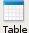

| Show/Hide | Help Center |
KompoZer is an open source What-You-See-Is-What-You-Get(WYSIWYG) complete web authoring system. It is based on Gecko, the Mozilla rendering engine. KompoZer is completely free and can be downloaded from KompoZer website.
This tutorial is designed for beginners, who are new to web page designing with a WYSIWYG editor. The tutorial provides just enough help so as to get you started with using KompoZer for your web page design purposes. It is not an introduction to HTML, XHTML, CSS, etc. coding. Its only aim is to give you a kick start on how to use KompoZer.
The manual does not even cover all the basic aspects of HTML in detail. Yes, this is a short tutorial and some basic albeit unimportant things have been left out. You are encouraged to find out about them yourself. Also the tutorial covers just an introduction on how to use cascading style sheets with the inbuilt editor, CaScadeS.
For those of you who are more interested in learning about HTML, CSS, etc in detail you can go to the W3 Consortium website. There you will find detailed information about various standards maintained by them. You can also do a search on the WWW or refer to one of the many books available on learning HTML.
This tutorial first introduces you to KompoZer's User Interface. This is followed by a basic formatting section. Next section, tells you how to insert elements like images, tables, and forms in your document. Then we have small section devoted to styling your document using CSS. The document concludes with instructions for publishing your document to a web server.
[ Return to beginning of section ]
KompoZer's File Menu contains menu items for all major operations possible while using it. For full detailed reference read the Menu Reference page. KompoZer's tool bar user interface consists of:
The Composition Toolbar consists of buttons for the most used major operations. Below is the a snapshot of the default Composition Toolbar with text below each button indicating the respective button's function.
The Format Toolbar is a very useful tool while editing web pages with KompoZer. With the Format Toolbar you can apply paragraph format, choose a font, change foreground or background colour, increase or decrease size, and emphasize a block of text. You can also create ordered or unordered lists and justify a block of text to left, right or centre. To know which button does what just hover your mouse over the button and a tool tip will appear indicating the function of the button.
KompoZer allows you to simultaneously edit multiple web documents using different tabs for each opened document. Having multiple tabs gives a cleaner look to your desktop as it is not cluttered when multiple windows are used for each document. As a visual indicator a "red floppy icon" icon appears for pages which have been edited but not saved yet.
The Edit Mode Toolbar indicates the viewing mode which is presently active for the current document. Available viewing modes are the Normal view, HTML Tags view, HTML source view and the Preview mode. You can easily change your viewing mode by simply clicking any of the other three with the mouse.
KompoZer's status bar shows the position of the cursor with respect to the HTML tag hierarchy. You can easily edit/assign the properties of any particular tag in the status bar just by right clicking and choosing the desired option. Simple left-click of the mouse on a tag in status bar selects the text surrounded by that tag.
[ Return to beginning of section ]
You can start a new document by either clicking on the "New" button on the composition toolbar or by clicking File > New and select "Blank Document" and then click on "Create". In case you want to edit an existing file use File > Open and choose the file you want to edit. For detailed instructions, refer to Starting a New Page section in the KompoZer Help documentation.
You can also start a new document which is a template instead of a normal html file. Templates are used to make website management easier as the maintainer will only need to edit the text for a particular page and not worry about the design as it is controlled by the template. This tutorial will not go further into creating and using templates. Further information about templates can be obtained from the Working with Templates section of KompoZer Help documentation.
[ Return to beginning of section ]
We will use the text given in the next section in the new document to follow the formatting help in this tutorial. The text will used as a base to learn basic formatting functions available in KompoZer. Copy the text from the following section and paste it in your new document.
Corbett National Park
Corbett National Park, named in the memory of Jim Corbett, was created in 1938 and was the first national park to be established in Asia. It is situated in the northern state of Uttranchal in India. It has an area of 512 sq. km. The combined area of Corbett National Park, Sonandi Wildlife sanctuary and Reserve Forest areas summing up to 1288 sq. km. constitute a bigger project called Corbett Tiger Reserve.
The most famous animals of Corbett National Park are the Bengal Tiger and the Asiatic elephant. It is also a home to other animals like etc etc. Situated at the junction of the Garhwal and Kumaon hill regions it also boasts of the combination of cultures of people of both regions.
Jim Corbett
Jim Corbett, (1825-19), lived in Kaladhungi. His house has been converted into a museum by the government as a dedication to his life and times. He was a naturalist, conservationalist and an avid photographer. Born on 25th July 1875, he grew up in Kaladhungi and Nanital. After fighting for the British army in the WWI, he came back to India and settled in Kaladhungi with his sister, Maggie. He was called up several times by village people and the government to get rid of man-eating tigers and leopards.
Visiting Corbett National Park
General Information
Altitude: 385-1100m above sea level
Annual Rainfall: 1400mm - 2800mm
Temperature range: 4C in winter to 42C in summer.
Open for tourists from 15 November to 15 June.
Getting there:
The head quarters of Corbett Tiger Reserver are at Ramnagar. By road it is connected to Delhi, Moradabad, Bareilly and Nanital. State transport buses ply from Delhi, Moradabad and Haldwani to Ramnagar. By rail tourists can reach Ramnagar by taking a train from New Delhi.
The first thing we will take care of are the headings and subheadings. Select the text "Corbett National Park" at the top of the document and click on the Body Text drop down menu on the Format Toolbar and select Heading 1. The text will be styled according to the default Heading Level-1 style. Similarly, select the text "Visiting Corbett National Park" and make it a level-2 heading.
The second you might want to do is to select entire paragraphs in your text and mark them paragraph following same procedure for the headings. In the given text this has already done to make the text more presentable, but otherwise marking paragraphs separately is a good practice.
You can also style important words or phrases using the bold(B), italic(I), or underline(U) buttons on the Format Toolbar, as has been done in this line. Several other options of formatting your text are available from the Format Toolbar or via the Format menu on the File Menu toolbar. Go ahead and try to use a few options, you will learn a few trick this way. If you mess up, don't worry, just click "Ctrl+Z" once to undo your last action. For detailed instructions about all the ways possible to format text for a web page, see Formatting your Web Pages section in KompoZer Help documentation.
At this stage, your tutorial text should look similar to this:
Corbett National Park, named in the memory of Jim Corbett, was created in 1938 and was the first national park to be established in Asia. It is situated in the northern state of Uttranchal in India. It has an area of 512 sq. km. The combined area of Corbett National Park, Sonandi Wildlife sanctuary and Reserve Forest areas summing up to 1288 sq. km. constitute a bigger project called Corbett Tiger Reserve.
The most famous animals of Corbett National Park are the Bengal Tiger and the Asiatic elephant. It is also a home to other animals like etc etc. Situated at the junction of the Garhwal and Kumaon hill regions it also boasts of the combination of cultures of people of both regions.
Jim Corbett, (1825-19), lived in Kaladhungi. His house has been converted into a museum by the government as a dedication to his life and times. He was a naturalist, conservationalist and an avid photographer. Born on 25th July 1875, he grew up in Kaladhungi and Nanital. After fighting for the British army in the WWI, he came back to India and settled in Kaladhungi with his sister, Maggie. He was called up several times by village people and the government to get rid of man-eating tigers and leopards.
General Information
Altitude: 385-1100m above sea level
Annual Rainfall: 1400mm - 2800mm
Temperature range: 4C in winter to 42C in summer.
Open for tourists from 15 November to 15 June.
Getting there:
The head quarters of Corbett Tiger Reserver are at Ramnagar. By road it is connected to Delhi, Moradabad, Bareilly and Nanital. State transport buses ply from Delhi, Moradabad and Haldwani to Ramnagar. By rail tourists can reach Ramnagar by taking a train from New Delhi.
[ Return to beginning of section ]
Images, tables and forms can be inserted/created in your document using the Composition Toolbar. Let us insert a table and copy the General Information about Corbett National Park into it. Click on the "Table" button  on the composition toolbar. And choose the table dimensions to be 5 rows and 2 columns with your mouse. Clicking on the 5th row in 2nd column will create a default table with those dimensions.
To fill the table with our pre-written text, just cut ("Ctrl+X") the corresponding text and paste ("Ctrl+V") it in corresponding cell of the table. After you are done, the table should look like the one below:
| Altitude | 85-1100m above sea level |
| Annual Rainfall | 1400mm - 2800mm |
| Temperature range | 4C in winter to 42C in summer |
| Open for tourists | 15 November to 15 June |
| Getting there | The head quarters of Corbett Tiger Reserver are at Ramnagar. By road it is connected to Delhi, Moradabad, Bareilly and Nanital. State transport buses ply from Delhi, Moradabad and Haldwani to Ramnagar. By rail tourists can reach Ramnagar by taking a train from New Delhi. |
With the basic table constructed, you can change the table properties by activating the table i.e. bring the cursor in the table and then click on the "Table" button on the Composition Toolbar. In the Table Properties dialog, you can set various properties for the table, cell, row or a column, e.g. background colour for table or cell, table caption, table alignment, table or column width, etc.
For a detailed treatment of various properties of table, the reader is referred to section Adding Tables to your Web Pages in the KompoZer Help documentation.
[ Return to beginning of section ]
Nvu allows the users to create or edit cascading style sheets with the help of its inbuilt style sheet editor named "CaScadeS". CaScadeS has the ability of using either internal or external style sheets for documents being edited. Details on how to use CaScadeS are out of scope of this tutorial. However, the user is directed to using style sheets in the main Help section.
[ Return to beginning of section ]
You can publish your documents using Nvu's built-in the Site Manager. The visibility of the site manager can be toggled by clicking the F9 button.
Site manager is being rewritten and hence this part of the tutorial has been postponed till the new version is released.
[ Return to beginning of section ]
Copyright © 2003-2009 Contributors to the Nvu, KompoZer Help Documentation Project.